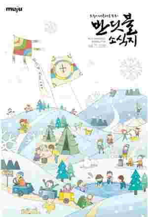
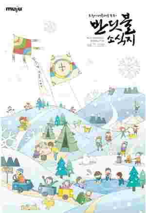

무주소식

 

-
무주 33경 중 1경
통일문으로도 불리는 라제통문은 무주군 설천면에서 무풍면 으로 가는 도중 설천면 두길리 신두[新斗]마을과 소천리 이남 [伊南]마을 사이를 가로질러 암벽을 뚫은 통문을 말하 는데 무주읍에서 동쪽 19킬로미터의 설천은 옛날 신라와 백제의 경계에 위치하여 두 나라가 국경 병참 기지로 삼아 한반도 남부의 동서문화가 교류되던 관문이 었다. 이렇듯 삼국시대부터 고려에 이르기까지 풍속과 문물이 판이한 지역이었던 만큼 지금도 언어와 풍습 등 특색을 간직 하고 있어 설천장날에 가보면 사투리만으로 무주와 무풍 사람을 가려낼 수 있다.
viewmore -
무주 33경 중 2경
라제통문에서 2.9km 거리에 있으며, 구산마을의 남쪽 계곡 운장대(雲壯臺) 앞에 마치 거북이 형상의 바위가 숨어 있는것 같다하여 이름 붙였다.옛날 선녀들이 내려와 목욕을 즐기던 곳이라 하여 강선대(降仙臺)라고도 한다.
viewmore